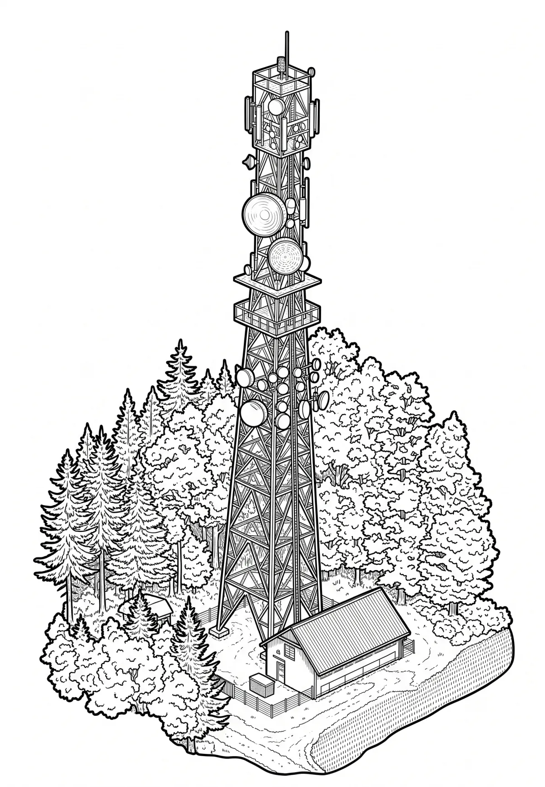

Rozhledna Osičina
Královéhradecký kraj · 416 m n. m.

technická památka · #063
Osičina (416 m n. m.) je vrch v okrese Rychnov nad Kněžnou Královéhradeckého kraje. Leží asi 1 km ssz. od vsi Vojenice na trojmezí katastrálních území Vojenic, vsi Záhornice a obce Přepychy.